Wheel of Fortune
The idea of Fortune as controlling a wheel that turns up and down unpredictably has its roots in ancient Greece and Rome. Herodotus, writing in the 5th century b.c.e, said, “Men's fortunes are on a wheel, which in its turning suffers not the same man to prosper for ever” (A. D. Godley, translator, Herodotus (1931), vol. 1, book 1, section 207, p. 261). In the same vein Ammianus Marcellinus (Historia, XXVI. 8) said, “Anyone who is prosperous may by the turn of fortune's wheel become most wretched before evening.” The philosopher and playwright Seneca expressed the same sentiment in numerous ways, as did many others.
Wikipedia cites numerous historical examples starting from the first century b.c.e. and likely reflecting earlier times. Its first is the zodiac, called "the wheel of fortunes"; it "moves from east to west/ and includes each of the twelve signs of fortune, the signs of the zodiac." Given that the zodiac was used for telling fortunes in ancient Babylon, it is possible that the idea of a "wheel of fortune" goes back that far.
The typical attitude toward Fortune, now personified as a fickle goddess, Fortuna in Latin, Tyche in Greek,is expressed by a Roman tragedian of the 1st century b.c (Pacuvius, Scaenicae Romanorum Poesis Fragmenta. Vol. 1, ed. O. Ribbeck, 1897):
Philosophers say that Fortune is insane and blind and stupid,In the Middle Ages, the most influential application of this concept was that of Boethius in his Consolation of Philosophy. 6th century c.e.
and they teach that she stands on a rolling, spherical rock:
they affirm that, wherever chance pushes that rock, Fortuna falls in that direction.
They repeat that she is blind for this reason: that she does not see where she's heading;
they say she's insane, because she is cruel, flaky and unstable;
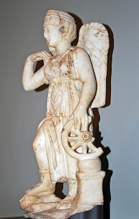 stupid, because she can't distinguish between the worthy and the unworthy.
Having entrusted yourself to Fortune's dominion, you must conform to your mistress's ways. What, are you trying to halt the motion of her whirling wheel? Dimmest of fools that you are, you must realize that if the wheel stops turning, it ceases to be the course of Fortune."The remedy was not to value the things of this world, but rather to focus on that which is eternal.
Another goddess with a wheel was Nemesis (at right above), who acted on behalf of the gods to bring down those whose pride went so far as to challenge the gods.
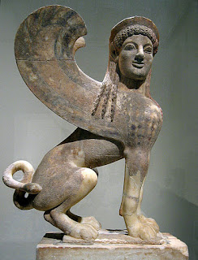
There was also the Sphinx (at left, c. 530 b.c.e., now in Metropolitan Museum, New York), best known from the Oedipus legend. Oedipus tried to escape the fate predicted by the oracle of Apollo, that of killing his father and marrying his mother, but in so doing only succeeded in fulfilling it. First he killed an old man who wouldn't yield to him at a crossroads, and then he answered the Sphinx's riddle, giving him kingship over the recently vacant city of Thebes if he married its queen, who of course was his real mother. His victories were in fact the shameful acts predicted for him by the oracle, as he later discovered to his sorrow. In these cases the supernatural agent of fortune is not fickle or blind, but an agent of divine justice.One of the earliest medieval illustrations still preserved contains lines that would later become incorporated into the tarot’s Wheel. In a drawing from late 9th century Spain now in the Manchester, England (John Ryland Library, ms. 83, folio 214v): regnabo, regno, regnavi, and sum sine regno: I shall reign, I reign, I have reigned, and I am without reign”. We will see similar words in the tarot.
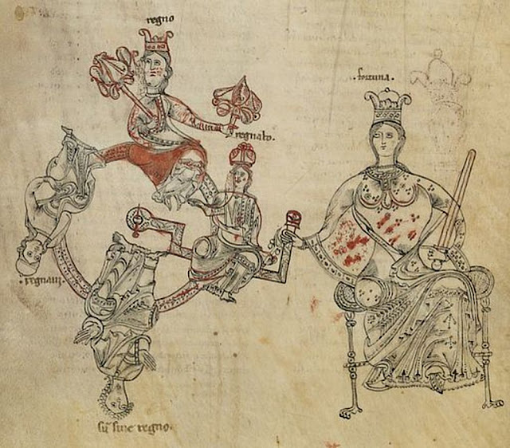
In the earliest known tarot Wheel of Fortune, that of the
Brera-Brambilla (Brera Gallery, Milan, far left below), done for some
member of the Visconti family before Duke Filippo Maria Visconti's
death in 1447. The words are not there, but we do see something else,
namely donkey ears on the one going up and the one on top, a pictorial
commentary on the foolishness that strikes people who are in authority
 ("on top") or expect to be so. The one going down and the one on the
bottom are noticeably without such ears.
("on top") or expect to be so. The one going down and the one on the
bottom are noticeably without such ears.The same is true in the next known Wheel, that of the Visconti-Sforza card (Pierpont Morgan Library, New York, near left). Although not easy to make out against the brown background, the one going up and the one on top again have donkey ears; and although the one going down lacks the ears, he does have a tail; these are symbolic features that ar surprisingly persistent in the tarots that follow. The only fully human figure is the one at the bottom. Very faint so many centuries later are the banners that accompany the figures: Regnabo, Regno, Regnavi, Sum sin regno.
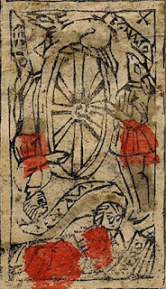Quella ruota dipinta mi sgomenta /
ch’ogni mastro di carte a un modo finge: /
tanta concordia non credo io che menta. /
Quel che le siede in cima si dipinge /
uno asinello: ognun lo enigma intende, /
senza che chiami a interpretarlo Sfinge. /
Vi si vede anco che ciascun che ascende /
comincia a inasinir, le prime membre,
e resta umano quel che a dietro pende”
(That painted wheel dismays me /
that every card maker paints in the same way: /
And such concord I believe is not a lie. /
For that which sits on top they paint /
A little ass: everyone understands the riddle, /
without calling on the Sphinx to interpret. /
We also see that each one that ascends /
begins to assify his upper members, /
and the one who hangs below stays human.)
Now we see why there were no donkey ears on the one going down in the earlier tarots of the Visconti and Sforza, although more ambiguously: he has grown wiser and more human as a result of his fall, even if he still retains an ass’s hindquarters; in contrast, on the way up his head was filled with assinine notions, and if he succeeded in reaching the top his assininity was complete. In the earlier tarots, which after all were commissioned by members of the Visconti and Sforza ruling family of Milan, the satire is more a warning than a judgment, since most of the head remains human. In all three of these, however, it is the one on the bottom who is fully human, even if he only possesses enough to cover his nakedness.
Another early tradition had fully human figures for the ones climbing and descending, but an animal face on the one on top.
This attitude of seeing the Wheel of Fortune, with its ups and downs, as a warning rather than an inevitabilty is characteristic of Renaissance Florence. Most noteworthy is a 1480s letter of Marsilio Ficino to Giovanni Rucellai, a rich merchant of the city who was concerned about the stability of his fortunes. Aby Warburg called attention to it in an essay published in 1932, Ficino's Italian was later translated into English for the English edition of some of Warburg's writings. Ficino wrote ( (pp. 256-257 of translation):
You ask whether man can influence or in any way remedy future events, and in particular those events that are deemed fortuitous. I am certainly of two minds on this matter. For when I consider the uncertain lives of the wretched common herd, I see that foolish people take no thought for the future; if they do take thought, they do not provide for a remedy; or else, if they do seek to improve maters, their efforts are of little or no avail. So that when I think of them, my opinion is that Fortune is irremediable. On the other hand, if I turn my mind to the works of Giovanni Rucellai and others, whose lives are governed by prudence and moderation, I see that things to come can be foreseen, and things foreseen can be remedied. When I consider this, my mind reverses its former opinion. This distinction amounts, it seems, to the following initial conclusion: that the blows of Fortune are not to be resisted by man or by human nature, but only by a provident [prudente=prudent] man and by human providence [prudenzia].Even then, Ficino adds, “a provident [prudente] man has power against Fortune, but with the gloss that was set upon it by that wise man, ‘Thou couldest not have the power except it were given thee from above' [John 19:11]." So Fortune must bow to Providence, in the sense of a beneficient power from God.
(Online at https://books.google.com/books?id=rWVDLJFs5QkC&pg=PA256&lpg=PA256&dq=Erneuerung+Aby+Warburg+deemed&source=bl&ots=T2RYxw6IFR&sig=nkbJFf4JX1Za_NPWTl6PC55Tdr4&hl=en&sa=X&ved=0ahUKEwiRgJ2836bZAhVJ7GMKHeiTCcoQ6AEIUzAD#v=onepage&q=Erneuerung%20Aby%20Warburg%20deemed&f=false)
After more discussion, Ficino concludes (Ibid, p. 258):
It is good to do battle with Fortune, wielding the weapon of providence, patience, and noble ambition [magnanimità=magnanimity]. It is better to withdraw, and to shun such a combat—from which so few emerge victorious, and then only after intolerable labor and effort. It is best of all to make peace or a truce with Fortune, bending our wishes to her will and willingly going the way that she directs, lest she drag us by force. All this we shall do, if we can combine within ourselves the might [potenza, also power], the wisdom, and the will. Finis. Amen.By a truce [“triega”], however, Ficino did not mean surrender, but rather accommodation, achieving one’s desires to the extent they are within the limits set by Fortune. It is the reconciliation of two opposites, victory and surrender. Even then there remains a tension, which Warburg characterizes as: (“Francesco Sassettis letztwillige Verfügung,” in Erneuerung Der Heidnischen Antike, Band I, Leipzig, 1932, p. 151 [“Francesco Sassetti’s Last Injunction to his Heirs,” in The Renewal of Pagan Antiquity, ed. Kurt Forster, trans. David Britt, Getty Research Institute, Los Angeles, 1999, p. 242]).
eine plastische Ausgleichsformel zwischen ‘mittelalterlichem’ Gottvertrauen und dem Selbstvertrauen des Renaissancemenschen ... einen neuen mittleren Zustand der Selbstbehauptung an, gleich weil entfernt von mönchisch-weltflüchtiger Askese, wie von weltbejahender Renommage.Online at https://books.google.com/books?id=rWVDLJFs5QkC&pg=PA242&lpg=PA242&dq=Erneuerung+Aby+Warburg+self-conceit&source=bl&ots=T2RYxw6GGR&sig=Y7S6zzJ4ku6v1oex1aYO_WiSTig&hl=en&sa=X&ved=0ahUKEwjvzbLh3qbZAhVB4mMKHdaJDYwQ6AEIKTAA#v=onepage&q=Erneuerung%20Aby%20Warburg%20self-conceit&f=false
(“an iconic [literally, graphic] formula of reconciliation between the ‘medieval’ trust in God and the Renaissance trust in self ... a new equilibrium, a state of self-assertion that would be equally remote from monkish, unworldly asceticism and from worldly [literally, world-affirming] self-conceit [literally, rewards])
The position of the Wheel of Fortune in the tarot sequence reflects this tension between the concerns of this world and those of the next. It was mostly tenth in the series, or eleventh if the Fool counts as first, sometimes one less or more, but always approximately midway. Below the Wheel are the cards of achievement within the practice of virtue; after it come the Old Man (soon to die), the Hanged Man (who is about to die), Death, and images of things that were considered eternal and unchanging.(It is true that Temperance paradoxically appears in some lists after the Death card --what need has a dead man for temperance?-- but this is in late lists, mid-16th century, and in only one center of the tarot, Milan.) Before the Wheel, the tarot looks to this world, afterwards, to the next. Both must be taken into consideration. Hence the necessity of conducting oneself virtuously, restraining one's material desires with Temperance, treating others with Justice, bearing misfortune with Fortitude, practicing Charity, and maintaining Faith and Hope in the world to come..
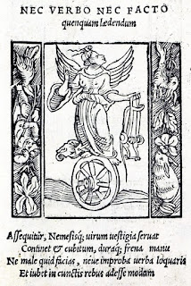
This way of minimizing the effects of Fortune in this life was expressed in comments about Nemesis. Alciati showed her with a bridle. Alciato in his Emblemata of 1531 used this same bridle as an attribute of Nemesis holds a bridle (Ibid, pp. 20-21). The words below the picture read“Nemesis guards and overtakes the steps of men;The words above the picture read,
She carries cubit-rule and bridle in her hand /
So that none may trespass in word or deed; /
Her orders are to keep right measure in all things.”
“None must be hurt either by word or deed."So be temperate in one’s desires, or else Nemesis will exact retribution. She is then not a blindfolded goddess, but an agent of the gods
In this way the medieval attitude toward Fortune, that of an arbitrary and merciless force, was somewhat overcome during the Renaissance. Fortune, if guided by prudence, justice, fortitude, temperance, and the other virtues, offers tangible rewards, but we must also take into consideration the transient and undependable nature even of rewards justly won. Being temperate in our desires is one way to get a respite from Fortune and Nemesis, while still recognizing their ultimate control over our earthly lives.
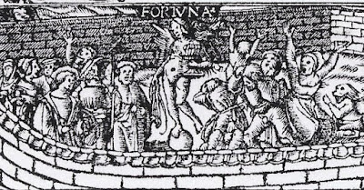
The contrast between these two attitudes is exemplified by different versions of a complex illustration used as a frontispiece for several books in the 16th century. All derive from a design by Hans Holbein the Younger, but there is considerable variation in some details. All versions show naked infants entering an enclosed garden and meeting various allegorical figures as the proceed to the upper end of the garden, clearly an allegory for life in this world.
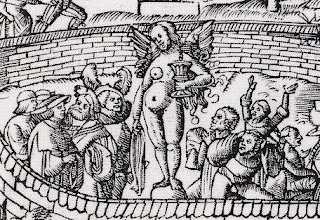
One of the first figures to be seen is a winged, naked goddess standing on top of a sphere, with a group of people below her on two sides. In "Version A" of 1521 (above), done after a design by Hans Holbein the Younger and probably under his supervision, anxious, grasping people on the right look up at what she holds in one hand, a trophy cup. On the left side, mostly calm but well dressed people look up at what she holds in her other hand, a bridle. Another frontispiece from the same year, "Version B" (at left), captures the same idea with fewer figures. The idea is surely that by restraining one's desires one can achieve calmness and also prosper sufficiently, whereas by going for large rewards where there is less chance of success, the result is mostly anxiety and poverty.
This idea of the happy people being on one side and the sad on the other, neither of whom are actually very admirable, is reflected in the text of the allegory that the frontispiece illustrates:
“But tell me, who can be that woman, who seems to be both wild and blind, standing on a globular shaped stone?'The text does not say that she holds anything in her two hands; those details would seem to be a Renaissance innovation, perhaps based on depictions of Nemesis, not only Alciato's but also one by Durer in around 1508, which shows the goddess holding a goblet in one hand and a bridle in the other. Durer's in turn was based on a poem by Poliziano, picturing Nemesis holding a bridle in one hand and a mixing bowl in the other Durer changed the bowl to a goblet.
“Her name,” answered he, “is LUCK; not only blind and wild is she, but deaf”
“And what might her business be?”
“She circulates everywhere,” said he. “From some she takes their substance, and freely gives it away to others. Then, again, she suddenly withdraws what she has given, and gives it to others without any plan or steadfastness. So you see that her symbol fits her perfectly.”
“Which symbol?” asked I.
“Why, the Globular Stone on which she stands.”
“And what does that betoken, I wonder?”
“That Globular Stone signifies that no gift of hers is safe or lasting, for whosoever
reposes any confidence in her, is sure to suffer great and right grievous misfortune.”
:”What is the wish and the name of that great multitude standing around her?”
“Oh! they are known as the UNREFLECTING, they who desire whatever Luck might throw them.”
“But then, how is it that they do not behave in the same manner? For some seem to rejoice, while others are agonizing, with hands outstretched?”
“Well, those who seem to rejoice and laugh are they who have received somewhat from her, and you may be sure that they call her FORTUNE! On the contrary, those who seem to weep and stretch out their hands are they from whom She has taken back what She had given. They call her MISFORTUNE!
“And what sort of things does She deal in, that they who receive them laugh, while they who lose them, weep?
“Why, what to tbe great multitudes seems Good, of course: Wealth; then Glory, Good Birth, 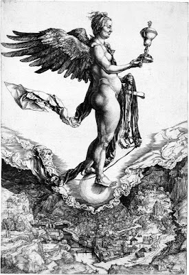 Children, Power, Palaces, and the like.”
“But such things, are they not really good?”
That question, let us postpone.”
“Willingly,” said I.
The tension between the two attitudes toward Fortune, as somewhat manageable (Cebetis Versions A and B) versus unmanageable (Version D), would seem to be the tension between the two views of life, monkish disdain for the world and self-affirmation in the world, that characterizes the Renaissance.
In 1565 Francesco Piscina wrote about the wheel card:
Finally in the tenth place the image of Fortune is placed. I believe that the author meant that, although Popes and Emperors are great, strong, and powerful, their honours, triumphs, powers and greatness, and in general all these earthly things and any other temporal good, are subject to the insolence of Fortune. So what Ariosto has written in his third Canto is no less prudent than elegant:This is of course the sentiment of Boethius, numerous medieval texts, and the Tabula Cebetis text, without the nuances that Ficino articulated in one's attitude to Fortune.
Fortune gives and takes everything,
only on virtue it has no power.
Piscina devotes another paragraph to the question of why Fortune has a higher position in the sequence than Justice. His answer is that on earth justice is administered very imperfectly, sometimes well and sometimes poorly, so that chance often dominates.
The anonymous treatise of around the same time but from a different region says that Fortune is what courtiers blame or praise depending on their reception by the court to which they are attached. Actually, the writer retorts, they have mainly themselves to blame, if their service is found wanting, or if not, then the poor judgment of the one doing the rewarding. In reality much depends on a hidden affinity between people that can cause poor service to be rewarded without justification.
Both of these authors make explicit a connection between Justice and Fortune, with the implication that Fortune seems often opposed to the demands of Justice. While the one accepts this at face value, the other looks to specific reasons why the arbitrariness of fortune actually is caused by the weaknesses of men. Another view is that justice is in fact served, even if we do not know why. Still another is that Fortune is guided by divine Providence, which takes a longer view. than our limited and self-centered perspective..
The Wheel in 17th-18th century France
The one on top is still clearly a king, thus exemplifying the verb "regno", meaning "I reign." That the other two are more animal-looking than previously perhaps suggests that both sides are based on material desires, and that to seek the favor of an earthly king is to invite disaster, since he who raises one up will most likely send one down again. It is perhaps a reflection on the French absolutism of the time, exemplified most memorably by Louis XIV.>
Noblet's card seems to start and end in water. That perhaps suggests the course of human life, being born out of unknown depths, rising up to some sort of mastery by mid-life and then falling again into the depths. That is a course described in ancient times by Plutarch and will be described again by Jung. Here is Plutarch on the "sistrum", a kind of rattle used in Isaiac processions (http://penelope.uchicago.edu/Thayer/E/Roman/Texts/Plutarch/Moralia/Isis_and_Osiris*/D.html#T375b):
The upper part of the sistrum is circular and its circumference contains the four things that are shaken; for that part of the world which undergoes reproduction and destruction is contained underneath the orb of the moon, and all things in it are subjected to motion and to change through the four elements: fire, earth, water, and air. At the top of the circumference of the sistrum they construct the figure of a cat with a human face, and at the bottom, below the things that are shaken, the face of Isis on one side, and on the other the face of Nephthys. By these faces they symbolize birth and death, for these are the changes and movements of the elements; and by the cat they symbolize the moon because of the varied colouring, nocturnal activity, and fecundity of the animal.It is qutie possible that this passage influenced the occultists' idea that the wheel was that of Ezekiel, who saw wheels with four faces on them, of figures later associated with the four elements. In any case, there is birth at the bottom on one side, and death on the other. But what of the symbol representing the ever-changing moon, "the cat with a human face"?
At some point, perhaps as late as the 18th century, a change occurred at the top of the wheel: the king on top resembled an Egyptian sphinx, with its long tail, a beard like those on Egyptian sculptures of pharaohs, and winglike
 banner behind (near right, Chosson of 1672 or 1736). This is not quite a cat, but a lion is a kind of cat. On the one hand, we might think of Ra, the king of the Egyptian gods, who finally elevates Horus to Kingship over Egypt, presumably sending Typhon to the Underworld. On the other hand, there is the Sphinx of the Oedipus legend.
banner behind (near right, Chosson of 1672 or 1736). This is not quite a cat, but a lion is a kind of cat. On the one hand, we might think of Ra, the king of the Egyptian gods, who finally elevates Horus to Kingship over Egypt, presumably sending Typhon to the Underworld. On the other hand, there is the Sphinx of the Oedipus legend.
De Gebelin, even while showing us precisely such an image, did not recognize the sphinx, even though his project was one of showing the Egyptian origin of the tarot. All he says is:
Here some human characters, in the form of Monkeys, Dogs, Rabbits, etc. ascend in turn upon this wheel to which they are attached; one would say it is a satire against fortune & against those whom she rapidly lifts up & those she allows to fall again with the same rapidity (Karlin p. 30).Except for the particular identification the animals, this is perfectly conventional and medieval.
Etteilla gives us a crowned monkey, or perhaps a rat, on top waving a baton, as though an animal-tamer, and on a ring below, a mouse and a man climb and fall alternately. Remembering that this card was produced in 1788, it is likely a satire against the monarchy and those who jump to its tune, so to speak. A mouse in French (and English) conventional metaphors is a person who is careful around authority but when it is gone will have a good time: "Quand le chat n'est pas là, les souris dansent", literally, "When the cat is not there, the mice dance." Etteilla's card thus seems a call to liberate humanity through political revolution.
The 19th and early 20th century occultists
Levi responded by drawing his own version of the card, one of only a very few done by him:
Hieroglyph, The Wheel of Fortune, that is to say, the cosmogonic wheel of Ezekiel, with an ascending Hermanubis, a descending Typhon on the left, and a sphinx balanced above and holding a sword in its lion claws. An admirable symbol, disfigured by Etteilla, who had replaced Typhon with a man, Hermanubis with a mouse, and the sphinx with a monkey. An allegory worthy of Etteilla's Cabala.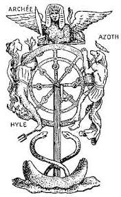 Ezekiel's vision of course did not include any of these creatures. Typhon, originally the name of a monster in Greek mythology, is the figure that de Gebelin had identified with the Devil, the evil principle of Plutarch's "Isis and Osiris." In that legend he is the brother and murderer of Osiris, who is avenged by his son Horus. Hermanubis is a Greek name for a hybrid of the Egyptian god Anubis and the Greek Hermes. He is the jackal or wolf-headed god who oversaw embalming and led the soul to the judgment hall in the afterlife. Plutarch had said he was the son of Osiris and Nepthys, when the latter took the form of Isis so as to deceive Osiris and induce him to have intercourse with her. Nepthys, however, abandoned the infant and he was rescued by Isis, who raised her as his own.
All of this fits Plutarch's account of the side of the sistrum that represents Isis. He says, in the sentence just before the passage I already quoted:
They say that they avert and repel Typhon by means of the sistrums, indicating thereby that when destruction constricts and checks Nature, generation releases and arouses it by means of motion.The editor refers us to an earlier passage in which Plutarch says:
..the fable has it that Typhon cohabits with Nephthys and that Osiris has secret relations with her, for the destructive power exercises special dominion over the outermost part of matter which they call Nephthys or Finality. But the creating and conserving power distributes to this only a weak and feeble seed, which is destroyed by Typhon, except so much as Isis takes up and preserves and fosters and makes firm and strong.This last is a reference to Anubis, the child of Osiris and Nepthys rescued by Isis, who thus corresponds to the side of the sistrum, now the Wheel, on the side of Isis, escaping the destructive power of Typhon on the side of death. In a sense it could also represent Horus, protected by Isis against the murderous designs of Typhon.
Levi called the sphinx "Archée." That is a word which otherwise meant the "immaterial principle of organic life." It could well represent Isis, and so far not the sphinx of Oedipus. Azoth is the arcane substance, the Alpha and Omega, A to Z, and so an alchemical symbol corresponding to Christ. Hyle is Greek for "matter", which without form is chaotic and destructive.
Levi's student Paul Christian qualified Hermanubis as "the Spirit of God" and Typhon as "the spirit of Evil.". Christian says of the sphinx at the top:
It personifies Destiny ever ready to strike left or right; according to the direction in which it turns the wheel the humblest rises and the highest is cast down.As the personification of Destiny, the sphinx could well be that of Oedipus, for she is the agent of his destiny, by which he unwittingly marries his mother..Christian has a nice sentence at the end of his short commentary.
To possess Knowledge and Power, the will must be patient; to remain on the heights of life--if you succeed in attaining them--you must first have learned to plumb with steady gaze vast depths.I am not sure how this advice relates to the card. It is presumably that in climbing up the wheel one must be able to withstand looking down at the serpents emerging from the two boats on a featureless sea..
Papus put the card in the context of Hinduism: it represented the law of Karma in the round of incarnations. It was also the principle of Vishnu, preservation. He did not elaborate on either of these ideas. Karma is a kind of balancing force in the universe that gives evil for evil done and good for good done in the successive incarnations.
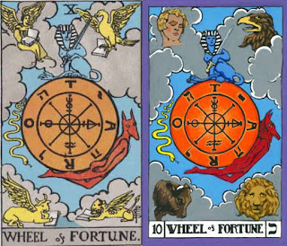similitudo autem vultus eorum facies hominis et facies leonis a dextris ipsorum quattuor facies autem bovis a sinistris ipsorum quattuor et facies aquilae ipsorum quattuor . . . cumque aspicerem animalia apparuit rota una super terram iuxta animalia habens quattuor faciesIn this regard Paul Foster Case's modification of Waite's card (at right above) is probably closer to the account in Ezekiel, in that it shows the four faces and one wheel. These four also were associated with the four elements and the zodiacal signs of Leo, Taurus, Aquarius, and Scorpio (for the eagle). After the Book of Revelation adopted the same schema (Rev. 4:7-8), the four animals also came to be understood as representing the four evangelists. What any of this has to do with Fortune is unclear. Moreover, since these same four figures repeat on card 21, it may be that some of these associations apply to one card and some to the other.
(And as for the likeness of their faces: there was the face of a man, and the face of a lion on the right side of all the four: and the face of an ox, on the left side of all the four: and the face of an eagle over all the four. ... Now as I beheld the living creatures, there appeared upon the earth by the living creatures one wheel with four faces.).
Waite adds, intentionally giving precedence to Levi:
With the French occultist [i.e. Levi], and in the design itself, the symbolic picture stands for the perpetual motion of a fluidic universe and for the flux of human life. The Sphinx is the equilibrium therein. The transliteration of Taro as Rota is inscribed on the wheel, counterchanged with the letters of the Divine Name--to shew that Providence is imphed through all. But this is the Divine intention within, and the similar intention without is exemplified by the four Living Creatures.There are also the symbols for the three basic concepts in alchemy: salt, sulphur, mercury, to which the Golden Dawn added water, the principle of dissolution, to make four. The identification of the Wheel with Providence seems to be made so as to counteract the view, expressed in ancient Epicureanism, that what happens in the universe, apart from what living beings make of it, is merely cause and effect working itself out aimlessly. That it is Providence implies that what happens is arranged so as to lead us to our proper destination, i.e. salvation, whether we know it or not.
Waite changed the devilish "Typhon" to a serpent. Perhaps it was because the serpent is more ambiguous than the Devil, connoting wisdom as well as evil, and the phallic fertilizing power of knowledge.
In the Golden Dawn tradition to which both Waite and Case belonged, it is associated with the 11th letter of the Hebrew alphabet, which Case said meant "grasping hand", not inappropriate in a card about the vagaries of material fortune.
There are six spokes on the TdM Wheel, eight on that of Waite and Case--so as to accommodate two sets of four, ROTA and JVHV, while Oswald Wirth had seven, for, he said, the seven planets of astrology. said in his analysis of the card that there were two circles on the wheel, rotating in opposite directions. He was probably referring to Ez. 1:16 (although there is no indication of direction):
...et aspectus earum et opera quasi sit rota in medio rotae.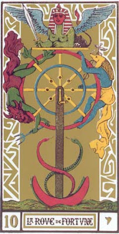Of the card, Wirth said:
(...and their appearance and their work was as it were a wheel in the midst of a wheel).
...it shows us a wheel with two concentric rims, the image of the double whirl whch generates the life of each individual. This life is engendered like an electric current as soon as a wheel, checked in its movement, takes the opposite direction in the girating movement around it. The individual is the result of the force opposing everything of which he is in fact a part. He only becomes the central point by rebelling against universality. ... He only manages to a limited extent, hence the brevity of individual existence to which the wheel of Fortune alludes....After the precipitation of the strong rhythm of youth comes the calm regularity of maturity, then the decline into old age which ends in a fatal and complete standstill.Such is the Wheel of Destiny for each individual, moving in opposition to the universal, even if it is also part of that universality.
Wirth sees the movement of individuality as going counter-clockwise, starting with the devilish-looking figure on the left, which he identifies as Hyle, Greek for matter, for Wirth, "the fire of selfish passion and the spirit of chaotic matter". It is also Capricorn and a symbol of fallen man, subsequently "regenerated in the water of baptism," after which
Hermanubis ... corresponds to the Azoth of the Wise, an ethereal substance which penetrates all things, to excite, support and revitalize if need be, the movement of life.Astronomically it is the dog-star rising at the summer solstice..
At the top, the equilibrium between the two, is the sphinx, of which he says:
It is the Archeus of the Hermetists, the fixed and determining core of individuality, in the centre of which burns Sulphur, corresponding to the sign of Libra between the two solstices.Wirth is drawing an analogy between the Sphinx, with its sword, and Justice, as depicted on the card of that name.
This account of the wheel as the falling and rising of an individual in the world is of some interest. It suggests that what appears to be a steady progression upwards from its beginning in matter to its end in the highest heavens is actually first down and then up. The more one makes one's "mark", so to speak, in the world, the further down one has fallen, until one is totally submerged in the waters of life, after which the motion slows and transforms to something ethereal and hence able to rise..
Wirth has no need of four separate animals, because the four are already in the Sphinx
human in its face and women's breasts, an eagle in its wings, a lion in its claws and a bull in the main part of its body...even if then there are not "four faces" for each wheel. This seems to have been a regular feature of occultism, as Paul Christian says the same thing about the Sphinx, albeit to different purposes.
Jungian Perspectives
Sallie Nichols subtitles her chapter on the Wheel as "Help!". Given that all the figures around the TdM card are animals, what she sees is endlessly repeating cycles of instinctual life, the positive energy of Anubis sometimes ascending but sometimes descending, and the same for the negative energy of Typhon. She writes:
It is the task of all human beings, striving for consciousness, to liberate animal energies previously caught in the repetitive instinctual round, so that this libido can be used in a more conscious way.How to break the cycle, get off the wheel, or turn circles into spirals, i.e. achieve something new and better in successive rounds?
But first, who are they? She observes that we are confronted here with "our old friends, the opposites." She is comparing the one going up and the animal going down with the two horses of the Chariot card and the two pans of Justice. Now, she says, we have yang energy to dominate and organize on one side and the yin energy to receive and contain on the other (I assume the first on the right and the second on the left). I am not sure how "receptive" the figure on the left is, as he falls from grace. Also, we might wonder what the ones on top and bottom represent. Or are they more of the same?
Robert Place characterizes the four figures of the Visconti tarot as youth, maturity, old age, and death--even though the fourth figure is obviously not dead and there is nothing to indicate that the third is of an advanced age. Here I would it might be possible to bring Jung to the rescue, in the essay, "The Stages of Life." His are childhood, then young adulthood, late adulthood, and extreme old age. The definitions of the two middle stages only emerge when there is a problem of the transition from the one previous. In the period of youth, he says:
Something in us wishes to remain a child, to be unconscious or, at most conscious only of the ego; to reject everything strange, or else subject it to our will; to do nothing or else indulge our own craving for pleasure or power.Yet after childhood there are social demands, the need for a livelihood and to be useful to others. If we take childhood dreams into this arena without adequate preparation, the result can be disastrous, yet not fatal. One learns fortitude, temperance, and justice In any case there is a narrowing of the personality so as to "achieve the attainable"; for some, it is a career, for others, raising a family, and often both at once.. This works for a while, indeed, for 20 or 30 years. Then the children are grown, and work gets old; there come nervous breakdowns, depressions, feelings of meaninglessness. Moreover in many cases one just isn't up to the same level of achievement as formerly. Things change into their opposite, even though there is the same reluctance to do so.. Even the body goes through changes (https://archive.org/stream/ThePortableJung/The%20Portable%20Jung_djvu.txt):
Especially among southern races one can observe that older women develop deep, rough voices, incipient moustaches, rather hard features and other masculine traits. On the other hand the masculine physique is toned down by feminine features, such as adiposity and softer facial expressions.In modern society, there is a quite precise parallel.
There is an interesting report in the ethnological literature about an Indian warrior chief to whom in middle life the Great Spirit appeared in a dream. The spirit announced to him that from then on he must sit among the women and children, wear women's clothes, and eat the food of women. He obeyed the dream without suffering a loss of prestige. This vision is a true expression of the psychic revolution of life's noon, of the beginning of life's decline. Man's values, and even his body, do tend to change into their opposites...
How often it happens that a man of forty-five or fifty winds up his business, and the wife then dons the trousers and opens a little shop where he perhaps performs the duties of a handyman. There are many women who only awaken to social responsibility and to social consciousness after their fortieth year. In modern business life, especially in America, nervous breakdowns in the forties are a very common occurrence. If one examines the victims one finds that what has broken down is the masculine style of life which held the field up to now, and that what is left over is an effeminate man. Contrariwise, one can observe women in these selfsame business spheres who have developed in the second half of life an uncommonly masculine tough-mindedness which thrusts the feelings and the heart aside.These are three stages of life. Oedipus knew about three stages of life, too.. What has four legs, then two, then three? the sphinx asked. "Man," Oedipus replied, "man": the infant crawls on all fours, the adult walks on two legs, the old man has a cane. This is not quite how Jung divides up the stages. He divides "adulthood" into two parts, one before and one after the midpoint, i.e. around 40 years of age, plus or minus, in which aspects of life formerly shunted aside become a new source of meaning. And after that there is a fourth stag. For the Greeks was that of a cane, meaning the stage when one was no longer physically and mentally vigorous. This could apply to either Jung's third or fourth stage. Jung's fourth is "extreme old age". The criterion for the last stage is the same as the first: dependency on others and a large share of life lived in unconsciousness. As he concludes his essay on "The Stages of Life":
Childhood and extreme old age are, of course, utterly different, and yet they have one thing in common: submersion in unconscious psychic happenings. Since the mind of a child grows out of the unconscious its psychic processes, though not easily accessible, are not as difficult to discern as those of a very old person who is sinking again into the unconscious, and who progressively vanishes within it.So that is one way of seeing the Wheel of Fortune, as the Wheel of Life and, in Jung's main metaphor here, the arc of the sun as it crosses the sky. In this case the top of the wheel really divides into two parts, and so does the bottom. There are four stages, but "top" and "bottom" aren't among them. Going up is the road of achievement; going down is the road of meaning. In former eras there were schools for both, with monasteries as especially adapted to the latter. Nowadays we still have such places, but there are also Zen retreats, ashrams, and, yes, Jungian institutes and other such schools aimed more toward midlife issues than those of the earlier period.
We may have accounted for two or three of the figures on the Wheel, but what about that animal at the top? I turn again to Sallie Nichols. She, like the occultists, identifies it as a sphinx, in this case not the Egyptian one, which is masculine, but the female Greek version, which she says "represents a negative mother principle" (p. 181). This brings her to the myth of Oedipus. Citing Jung's student Marie-Louise von Franz, Nichols continues:
Although Oedipus succeeded in solving the riddle propounded by the sphinx, he did not thereby redeem his instinctual nature from her power. On the contrary, he still remained in the grasp of cruel fate, as helpless as any animal revolving on the wheel of instinctually predestined behavior.He has gone from one "devouring mother" to another, his mother/wife Jocasta. Nichols does not explain what makes her a "devouring mother". But she does ask, what else could Oedipus have done?
The problem, Nichols says, is that he tried to "think things through" on an intellectual plane without reckoning with the demands of the unconscious. Nichols says:
As von Franz reminds us, it is a familiar plot of the unconscious to distract the hero (human consciousness striving toward wholeness) by proposing philosophical questions at the very moment when he most needs to confront the demands of his instinctual nature.Nichols then appeals to another Greek myth, that of Ixion. Both of these myths were part of the 16th century's associations to the card. I have already cited Ariosto's remark that it "doesn't take a Sphinx" to understand what the card is about; for Ixion there is Sebastian Brant's Der Narrenschiff, which advises the unjust king (in modern German, https://moocit.de/index.php?title=Brant,_Sebastian_(1457/58-1521):_Das_Narrenschiff)
Ixions Rad bleibt nimmer stehn..referring to punishment in the afterlife, as opposed to the total collapse of his power when he dies.
(Ixion's Wheel never stops...)
Ixion had committed two unforgivable sins. On earth, he invited his father-in-law to a feast and then killed him, to avoid paying the bride-price. No one would perform the rites that would allow his soul to be purified of this violation of the law of hospitality, so he remained a tortured soul. Zeus took pity on him and invited him to Olympus. There he conceived a passion for Zeus's wife Hera. Zeus thwarted Ixion's desire by substituting a cloud for Hera, which Ixion impregnated, resulting in the birth of Centaurus, who mated with a mare and founded the race of centaurs. Zeus then sentenced Ixion to be bound forever on a wheel of fire.
This myth is much the same as that of Oedipus. Instead of killing his father in a fit of rage, he kills his father-in-law in a calculating way. Instead of marrying his mother, he lusts quite ludicrously after his supernatural host's wife. Both try to elevate themselves above earthly creatureliness and escape the round of human fate. The Greek lesson is that such pride (in Greek, hybris) will inevitably meet severe punishment by the gods. Nichols concludes:
If we cannot rise above our fate, we must find some other way to deal with the sphinx and her Wheel.Here Nichols appeals to its place in the sequence. As Jung reminds us, life for medieval theology was a process of descent into matter and then freeing oneself from matter again, the descensus and ascensus.. The first part of this process is in the cards before the Wheel:
In psychological terms, the ego is born, develops strength, begins to free itself from dependence on its parental archetypes, and establishes itself in the world.The remaining cards then have to do with "the disentanglement of spirit from matter":
In psychological terms, the remaining Trumps represent the second stage of life, where the ego's energies, having conquered the outer world, turn inward toward spiritual development.However the places on the wheel are not restricted to any particular age ranges:
The Tarot Wheel represents a turning point that can take place at any age - and it will turn for us all many times.There is also the phenomenon of the repeating dream. It is like the ringing of a telephone. Until you listen to what it is telling you, it will keep on ringing, i.e. repeating. (Jung said that dreams take the form of a circle or spiral.) But the answer, when you "listen" to a dream, doesn't come by reasoning, but by exercise of the imagination, she says. There are various questions one can ask of it, and imagine a response. One can also try to paint it, and then reflect on what one has spontaneously produced in terms of one's life. On can also spread out the tarot trumps and try to find cards that relate specifically to the content of what one has produced.
Another technique is to take a problem of personal concern and turn it into a story with a protagonist other than oneself, and then imagine the story continuing on, omitting nothing that occurs to one, however foolish it may appear.
Near the end she returns to Oedipus and the prophecy about killing his father and marrying his mother:
If Oedipus had considered the soothsayer's prophecy symbolically rather than literally, and if he had examined his inner terrain rather than setting forth to change his outer geography, he might have avoided the fate which was prophesied at both the literal and the symbolic levels. For example, he might have taken "killing his father" as a warning to control his impulsive, hot-headed actions, his quick murderous temper, and the overwhelming pride of youth, which demanded the right of way in any encounter and turned against all established values. He might have explored his tendency to "marry his mother" as symbolizing an infantile need for overprotective mothering. A modern Oedipus, faced with such dire premonitions, might have sought professional help of some kind, thus perhaps avoiding murder and incest both, symbolically and literally.It seems to me that such reframing of the oracle does not quite go far enough. To an extent it is as much a form of intellectualization as any Sphinx's riddle. Is not modern psychotherapy also guilty of a kind of hybris, thinking that by analysis one can really alter one's personality? It is one thing to know about one's tendencies and another to actually change one's behavior. There is the example of Ixion, who appears to recognize his guilt in killing his father-in-law but then commits a new crime on the higher level of Olympus, and is thereby sentenced to an afterlife of endless repetition. Today there are twelve step programs to deal with impulsive anger and sexuality; the first step is to recognize one's powerlessness over that impulse. Then there are eleven more.
Jung says that in "normal" childhood the person has no problems of his own; he is only a problem for others. Fairy tales and legends know better. Laius had had his child' ankles pierced and tethered together as Jocasta says to Oedipus (http://classics.mit.edu/Sophocles/oedipus.pl.txt):
JOCASTA. As for the child, it was but three days old,
When Laius, its ankles pierced and pinned
Together, gave it to be cast away
By others on the trackless mountain side.
MESSENGER I loosed the pin that riveted thy feet.But Jocasta lied about one thing, who it was who gave the child to a servant to leave on a mountaintop, as the servant, now a herdsman, later testifies:
OEDIPUS Yes, from my cradle that dread brand I bore.
MESSENGER Whence thou deriv'st the name that still is thine
HERDSMAN Know then the child was by repute his own,"Weird" evidently refers to the prophecy. I quote this part because Nichols blames only the father, when it would seem that both are implicated. It is no wonder if he responded negatively to someone old enough to be his father and still yearned for the protective mother of early childhood whom he never had.
But she within, thy consort best could tell.
OEDIPUS What! she, she gave it thee?
HERDSMAN 'Tis so, my king.
OEDIPUS With what intent?
HERDSMAN To make away with it.
OEDIPUS What, she its mother.
HERDSMAN Fearing a dread weird.
OEDIPUS What weird?
HERDSMAN 'Twas told that he should slay his sire.
Even if one regards the prophecy symbolically, the work of transformation has yet to take place. Recognition of the wound and of the resulting defensiveness is only one step out of many. Does the person also recognize his hot-temperedness in the moment of anger? That is the hard part, developing strategies that can be used to remember in the moment. That is the point of 12-step programs. As for marrying someone who is overprotective, is that really the issue? Perhaps he needs an overprotective woman as a love-object, to make up for what he missed in his early years, to feel safe enough to grow emotionally. That is not a mature relationship, perhaps. But we are talking about someone who has already fought a negative mother, the Sphinx, and won, and who will go on to rule a city and raise two sons and two daughters. In fact men do often marry women like their mothers, just as women marry people like their fathers. However it is not thereby a relapse into infantalism, if there has been the development of a strong enough ego to make one's way in the world.
Yet at some point Oedipus's defense mechanisms no longer work. The city is in crisis, and that means he is in crisis. It is the midlife crisis in mythic form. He realizes that he has done things that were inappropriate, even if they were done in ignorance. With his new awareness he can't live his life in the same way.
In this development we might see fire, air, water and earth as representing different stages of Oedipus's development. Oedipus is fiery, like the Lion, when he confronts the old man at the crossroads. Then he is he confronts the winged goddess, defeats her and becomes king of Thebes. This is in the realm of air.(I know that the eagle is supposed to "really" be Scorpio and water, but this is a 19th century interpretation.) When he discovers the truth, he is overwhelmed, blinding himself as a kind offering to Apollo and becoming a wandering exile. Then in Oedipus at Colonus he recognizes a grove that he and his daughter Antigone enter, which proves to be sacred to the Furies, as the place prophecied for his death. At the end of the play he walks into the grove to die, into a tomb apparently already ready for him. This stage of earth would be the final one, of the darkness of extreme old age leading to death. It is also the movement from greater to lesser energy of which Wirth spoke, dropping to zero at death.
It is also a question of living one's life in harmony with the primordial images," those that are older than human history. Jung says in the same essay, "The Stages of Life":
It is only possible to live the fullest life when we are in harmony with these symbols; wisdom is a return to them.These include the idea of something beyond this life:
One of these primordial thoughts is the idea of life after death. Science and these primordial images are incommensurables. They are irrational data, a priori conditions of the imagination which are simply there, and whose purpose and justification science can only investigate a posteriori...I am skeptical about the idea of personal survival after death being primordial. What is primordial is "magical thinking", including prophecy, to which of course science would deny any validity. But it is the imagination that is their substratum, not the world as conceived by science. And even science depends on imagination. In the third quarter of life the imagination does attach more importance to the issues of what is beyond ego consciousness and what of us might continue after death.
In Jungian terms Oedipus undergoes, at least, a first encounter with the Self, the unified whole of his personality.. That, too, is represented by a circle. To the medieval mind the universe was a series of concentric circles, the last being that of God. For Nicholas of Cusa God was "the circle whose center is everywhere and circumference nowhere.".For Jung the Self is also a circle, where the ego is just one point somewhere between the periphery and the center, which in submitting to the whole, the Self, it receives new energy, on what is called the ego-self axis, a continual source of change and development.
From a Jungian perspective the Wheel card gives us the first picture in the tarot sequence of the Self, as the totality of life. The ego, however, is not yet connected with the center, which in this interpretation is not the fickle Fortuna but represents the whole personality. To the extent that the whole, which includes the organism itself with its defects and diseases, is not only beyond consciousness but beyond time and space altogether, as a psychoid reality of which consciousness and materiality are two aspects, what it expresses in dreams, visions, etc. can well be the personality's link to Providence, that which sees the whole and acts for the sake of the whole. It leads to fortuitous coincidences - "synchronicities' - that give strange kind of meaningfulness to one's actions.
A Christian version of this perspective is that by Shakespeare in his famous play Hamlet (whether Hamlet is a new Oedipus I leave to others). Here is the relevant part of the plot. Hamlet's uncle Claudius kills Hamlet's father, King of Denmark. The need for revenge, but as well for some kind of proof of Claudius's guilt, plus his mother's marriage to the suspected murderer, drives Hamlet half-mad, not to mention toward a certain indulgence in philosophical games (to use von Franz's phrase). A series of misadventures leads Claudius to decide that to protect himself Hamlet must be killed, secretly and away from those who love him. Here, at least in Hamlet's eyes, Providence enters in, giving Hamlet just the right suspicions about Claudius's plans and also precisely the tools he needs to fight back, namely his father's seal, which he has on the ring he is wearing, and the ability to forge the handwriting of Claudius's letter of execution, whereby he can order the hanging of his traveling companions, whom he knows report back to Claudius, instead of himself. As Hamlet tells his friend Horatio while relating these events:
Our indiscretion sometimes serves us well,It is the fortuitous provision of just what he needs. He is the tool of Providence and accepts whatever she will make of him, including the sacrifice of his life, as he says later, rejecting Horatio's feelings of foreboding about a fencing match Claudius invites Hamlet to engage in:
When our deep plots do pall: and that should teach us
There's a divinity that shapes our ends,
Rough-hew them how we will.
...we defy augury. There's a special providence in the fall of a sparrow.In a sense he doesn't deny Horatio's foreboding; he simply considers it a sign of providence, next to which he is only a sparrow. The wheel will turn, but it is not Fortune, nor even Fate, but Providence at the crank.